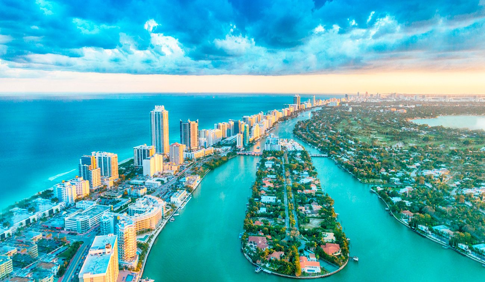

Fecha access_time Ubicacion Geográfica local_hotel
Méxiconota 1 (Acerca de este sonido [ˈmexiko]), oficialmente llamado Estados Unidos Mexicanos,14151617 es un país de América ubicado en la parte meridional de América del Norte con capital en la Ciudad de México.18 Políticamente es una república representativa, democrática, federal y laica, compuesta por 32 entidades federativas (31 estados y la capital federal).19 El territorio mexicano tiene una superficie de 1 964 375 km²,20 por lo que es el decimotercer país más extenso del mundo y el tercero más grande de América Latina. Limita al norte con los Estados Unidos de América a lo largo de una frontera de 3 155 km, mientras que al sur tiene una frontera de 958 km con Guatemala y 276 km con Belice. Las costas del país limitan al oeste con el océano Pacífico y al este con el golfo de México y el mar Caribe, sumando 9 330 km, por lo que es el tercer país americano con mayor longitud de litoral.21. México es el undécimo país más poblado del mundo, con una población estimada en más de 124 millones de personas en 2018.8 La mayoría de ellas tiene como lengua materna el español, al que el estado reconoce como lengua nacional junto a 67 lenguas indígenas propias de la nación,22 si bien en el país se hablan alrededor de 287 idiomas
Estas cifras convierten a México en el país con mayor número de hispanohablantes,24 así como en el séptimo país con mayor diversidad lingüística en el mundo.En términos macroeconómicos, por producto interno bruto (PIB) es la decimocuarta economía mundial y la undécima por paridad del poder adquisitivo (PPA); en escala regional, es la segunda economía de América Latina y la cuarta del continente.2829 Según el informe de 2018 de desarrollo humano de la ONU, tiene un índice de desarrollo humano alto de 0.774, y ocupa el lugar 74 º en el mundo, con lo que ha logrado grandes avances al lado de países como Indonesia, Turquía, Tailandia y Sudáfrica, considerado el hecho de que en 2010 contaba con un índice de desarrollo humano de 0.743 .303132 No obstante, su índice de desarrollo humano ajustado a la desigualdad es de 0.608; considerado medio.33